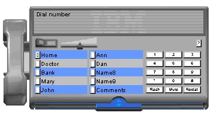
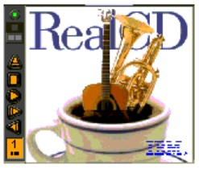
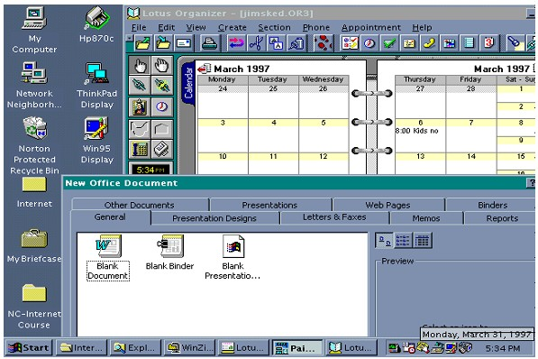

The RealPhone is a speaker-phone that supports dialing and answering, a name/number list, 10 speed dial buttons, flash,
mute, and redial. You can use either a mouse or the keyboard for all interactions. It is implemented using the
nonrectangular window capability of Windows 95. It can be used on systems having an IBM MWave digital signal processor,
such as several models of the IBM ThinkPad and Aptiva product lines, or any system using the IBM Multimedia Modem
adapter card. For further information go to: http://www.ibm.com/ibm/easy

The RealCD plays audio CDs. Its interface resembles a plastic CD jewel case with a control panel for the basic playing
functions. The case can be opened to display the CD booklet and playlist. Several pictures are included for the case
and booklet covers; however, users can also incorporate their own scanned or drawn pictures. Users enter the CD title
and playlist (track titles). These customizations appear whenever the CD is played. In addition, users can set the CD
to automatically start playing when inserted by selecting the AutoStart option during installation.
The RealCD is implemented in Java and is available as an application. For further information go to: http://www.ibm.com/ibm/easy

Windows, Macintosh, and OS/2 operating systems and their “desktop” metaphors are examples of a conceptual model of a
user interface and metaphors used to communicate this model. Metaphors used to communicate the objects are documents
(metaphor for files), folders (metaphor for directories), and a trash bin (metaphor for the delete command). Object
relationships include placing documents in directories or in the trash bin. Object groupings would include the tasks
supported in the “Edit” menu (cut, copy, paste). The interaction paradigm consists of keyboard input for text entry,
“shortcut keys,” other control character interaction, and mouse manipulation (including menus, point and click
selection, and drag and drop). The visual treatment depiction follows.

|